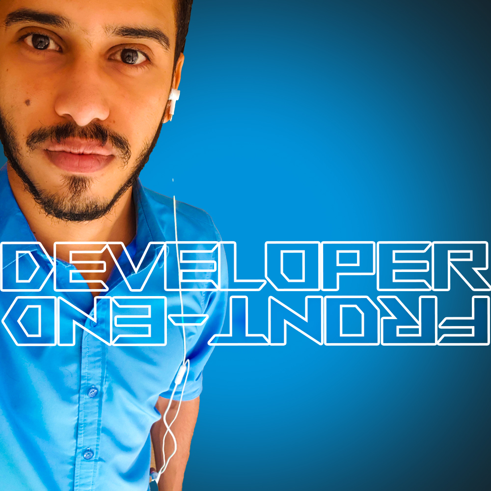

Abdulrahman Ahmed
Junior Front End Developer
abdulrahman.dev.me@gmail.com
✦ Work History
✧ DataEntry & IT
06/2021 – 08/2022
worked in Hurghada Branch , Tasaheel microfinance
- was the main data entry , the support for networking, Hardware,
daily absence and The IT support with the rest of the branches
✧ Customer Service Trainee
04/2019 - 06/2019
Trainee at NBE
- Completed as a trainee in at National Bank Of Egypt in my fourth year of college
✦ Internship
✧ SOFTWARE ENGINEERING DEVELOPMENT FUNDAMENTALS
06/2022 - 06/2023
Information Technology Institute,ITI
- ITI Intensive Code Camp – Software Engineering Fundamentals Specialization
Provided by the Information Technology Institute
in cooperation with the Egyptian Ministry of Communications